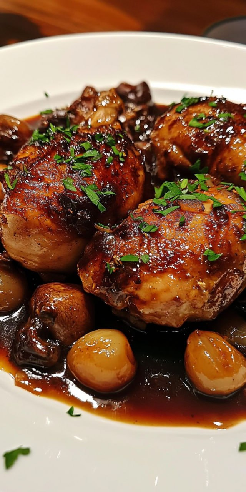

Coq au Vin - Plat Traditionnel Français
Ingrédients :
- 1 coq coupé en morceaux
- 750 ml de vin rouge
- 200 g de champignons de Paris
- 2 oignons émincés
- 2 gousses d’ail écrasées
- 2 carottes coupées en rondelles
- 200 g de lardons
- 2 cuillères à soupe de farine
- 1 bouquet garni (thym, laurier, persil)
- 50 g de beurre
- Huile d’olive, sel et poivre
Instructions :
- 1. Faire mariner le coq dans le vin rouge avec les aromates pendant 12 heures.
- 2. Égoutter et sécher les morceaux, puis les faire dorer dans du beurre.
- 3. Ajouter les oignons, les carottes et les lardons, puis saupoudrer de farine.
- 4. Verser le vin rouge et ajouter le bouquet garni.
- 5. Laisser mijoter à feu doux pendant 2 heures.
- 6. Ajouter les champignons et poursuivre la cuisson 15 minutes.
- 7. Servir chaud avec des pommes de terre ou des pâtes fraîches.